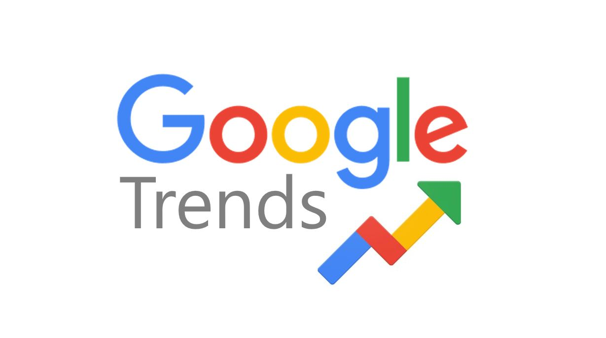

Как выйти в топ поиска Яндекса в вашем городе с Яндекс.Вордстат
Как использовать Янедекс.Вордстат
Практические статьи и советы по продвижению бизнеса в Солнечногорске
Как использовать Янедекс.Вордстат

SEO и продвижениеКак использовать Google Trends
Что такое Яндекс Бизнес и для кого?
Яндекс.Директ чудо инструмент?
Яндекс.Метрика
Как контролировать индексацию, получать сообщения от Яндекса и улучшать позиции в поиске
Получите бесплатный аудит вашего онлайн-присутствия и план действий
Получить аудит